유통관리사-2급 (2013-10-27 기출문제)
1과목: 유통물류일반
1. 경쟁기업을 분석하는 방법으로 전략집단에 대한 가장 올바른 설명은?
- 하나의 산업에 하나의 전략집단만 존재하므로 유통산업 내에서도 하나의 전략집단만이 존재한다.
- 전략집단은 어떠한 전략으로 고객에게 접근할 것인가가 주요 이슈이기 때문에 서로 다른 산업의 기업이라 하더라도 목표고객(층)이 유사/동일하다면 같은 전략집단에 속한다.
- 복수의 유통기업이 서로 다른 전략으로 시장에 접근한다면 전략집단도 다양해진다.
- 몇 개의 유통기업이 가격을 담합하여 동일한 가격 전략을 취하였다면, 촉진전략이 다르더라도 이들 유통기업들은 동일한 전략집단에 속한다.
- 도매상과 소매상은 생산자와 소비자 사이에서 상품을 전달하는 역할이 유사/동일하므로 동일한 전략집단으로 간주한다.
(정답률: 50%)

2. 기존기업은 잠재기업이 시장에 진입하는 것을 방지하기위해 진입장벽을 구축하는데, 진입장벽의 유형 및 사례로서 가장 올바른 것은?
- 규모의 경제 - 기존기업은 판매상품을 독점적으로 보유하거나 신규기업이 실현하지 못하도록 판매관리비용을 낮춘다.
- 경험곡선 - 기존기업은 자신의 기업이 다른 기업에 비해 예전부터 고품질의 제품을 판매한다는 광고를 지속적으로 한다.
- 비용열위 - 기존기업은 판매상품을 대량으로 저렴하게 구입하여 소비자에게 판매시 낮은 마진을 붙인다.
- 범위의 경제 - 기존기업은 상품구색시 주력상품에서 발생하는 비용상의 우위를 활용하여 취급상품의 수를 확대한다.
- 차별화 - 기존기업은 판매경력이 풍부한 인력을 채용하여 판매업무의 효율성을 높인다.
(정답률: 60%)
3. 유통경로의 세 가지 구성원(제조업체-도매업체-소매업체)간에는 서로 주도자가 되기 위해 권력(power)을 행사하려고 하는데, 소매업체 권력의 원천에 해당하는 것은?
- 제조업체의 제품 브랜드가 구매자에게 잘 알려져 있는 경우
- 제조업체에 전속된 소매업체인 경우
- 소매업체가 집중적인 구매를 하는 경우
- 도매업체가 소매업체에게 의도적으로 공급을 지연하는 경우
- 전방통합의 가능성이 높은 경우
(정답률: 60%)
4. 다양한 유통기업집단의 형태들(카르텔, 트러스트, 콘체른)에 대한 특징들을 나열한 것이다. 이 중 카르텔의 특징에 해당하는 사항을 모두 고른 것은?
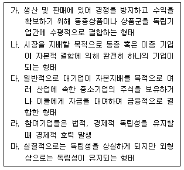
- 가,라
- 나,마
- 다,라
- 가,마
- 다,마
(정답률: 27%)
5. 유통산업발전법에서 규정하고 있는 용어에 대한 정의가 가장 올바른 것은? (문제 오류로 실제 시험에서는 모두 정답처리 되었습니다. 여기서는 1번을 누르면 정답 처리 됩니다.)
- 매장이란 상품의 판매와 이를 지원하는 용역의 제공에 직접 사용되는 장소를 말하며, 그 장소의 범위는 산업통상자원부령으로 정한다.
- 대규모점포 중에서 대형마트는 용역의 제공장소를 제외한 매장면적의 합계가 3천 제곱미터 이상인 점포로서 식품.가전 및 생활용품을 중심으로 점원의 도움 없이 소비자에게 소매하는 점포의 집단이다.
- 대규모점포 중에서 복합쇼핑몰은 용역의 제공장소를 제외한 매장면적의 합계가 3천 제곱미터 이상인 점포의 집단으로서 쇼핑, 오락 및 업무 기능 등이 한 곳에 집적되고, 문화.관광 시설로서의 역할을 하며, 1개 또는 소수의 업체가 개발∙관리 및 운영하는 점포의 집단이다.
- 상점가란 일정 범위의 가로(街路) 또는 지하도에 산업통상자원부령으로 정하는 수 이상의 도매점포∙소매점포 또는 용역점포가 밀집하여 있는 지구를 말한다.
- 유통산업이란 농산물.임산물.축산물.수산물 및 공산품의 도매.소매 및 이를 경영하기 위해 포장을 제외하고 보관.배송과 이에 관련된 정보∙용역의 제공 등을 목적으로 하는 산업을 말한다.
(정답률: 68%)
6. 물류시설 중 ‘항만 및 내륙운송수단의 연계가 편리한 산업지역에 위치하여 컨테이너 집화, 혼재를 위한 하치장을 말하며, 컨테이너 장치, 보관기능, 집화, 분류기능 및 통관기능을 담당’하는 시설물은?
- ICD
- CY
- CFS
- 창고
- 유통단지
(정답률: 41%)
7. 상품수명주기(PLC)에서 성숙기에 대한 설명은? (문제 오류로 실제 시험에서는 2, 4번이 정답처리 되었습니다. 여기서는 2번을 누르면 정답 처리 됩니다.)
- 이 시기에 기존의 유통강도를 유지하는 것이 매우 어렵기 때문에 경로구성원들은 이 시기에 해당하는 상품의 취급을 포기하거나 수요가 높은 다른 상품을 취급하는 경향이 두드러진다.
- 이 시기에 유통구조는 새로운 지역으로 확대되고 증가된 수요 강도는 경쟁적인 상황으로 이끌게 되며, 핵심적인 유통정책은 제품의 이용가능성을 높이는 것이다.
- 판매량의 증가율이 둔화되고 중간상의 마진폭은 감소하게 되며, 경로구성원들은 적절한 수준의 경쟁강도를 유지하는 정책을 사용한다.
- 이 시기에 기존상품보다 더 품질이 뛰어나거나 동일한 가격으로 기존수요를 대체하는 상품이 도입되기 시작한다.
- 이 시기에 유통경로에서 상당한 저항을 일으키기 때문에 제조업체는 유통경로를 확대하는 정책에 많은 노력을 기울인다.
(정답률: 75%)
8. 제조업체 K사의 유통경로전략 중에서 집약적(intensive)유통에 대한 설명으로 가장 거리가 먼 것은?
- 집약적 유통경로는 장기적으로 시간이 흐르면서 다수의 경로구성원들이 K사 제품의 소매가격을 경쟁적으로 낮추어 제품의 이미지를 손상시킬 수 있다.
- 경쟁적으로 제조업체 K사 제품의 소매가격이 낮아지기 때문에 유통업자들은 마진축소에 따른 서비스의 품질을 낮추려고 할 수 있다.
- K사 제품의 소매가격이 낮아짐으로 인한 문제점은 유통업자들의 촉진활동도 위축시켜 판매량 감소로 이어질 수 있다.
- K사 제품의 판매량이 감소하면 점차 유통업자는 점증하는 재고에 부담을 느껴 제조업체로의 반품이 증가할 수 있다.
- 집약적 유통경로전략은 K사가 유통업체들을 강력하게 통제하기 어렵기 때문에 통제의 수단으로 제품을 공급할 때 재판매가격 유지정책을 사용한다.
(정답률: 48%)
9. 재고관리에 대한 올바른 설명으로 가장 거리가 먼 것은?
- 재고수준은 고객의 만족도에 영향을 미치는 동시에 유통이나 물류에 소요되는 비용에 있어서 중요한 요소이기도 하다.
- 재고는 생산과 관련된 요인으로 인해 주요 시장과 지리적으로 거리를 둔 제조업체들이 자재운송비의 최소화나 원자재와 부품이용의 편의를 도모하는 기능이 있다.
- 최적주문량의 결정은 경제적 주문량(EOQ)에 의해 측정되며, 주문비용, 연간수요량, 평균재고유지비, 재고품의 단위당 원가 등의 변수를 활용하여 계산된다.
- 주문비와 재고유지비가 상황에 따라 변동하는 경우에 EOQ를 이용한 최적 주문량의 결정은 매우 유용하다.
- 재고는 미래의 판매에 대한 불확실성을 해소하기 위해 필요하기 때문에 초과수요와 판매지연 등에 초점을 두고 있다.
(정답률: 24%)
10. 다음은 유통경로구조 결정이론 중 어떤 이론에 대한 설명인가?
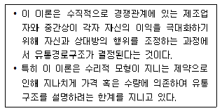
- 게임이론
- 연기-투기이론
- 대리이론
- 정치-경쟁관점이론
- 기능위양이론
(정답률: 43%)
11. 유통 및 그 업태와 관련한 설명으로 옳지 않은 것은?
- 유통은 생산기업과 소비자 사이에서 상품의 흐름과 자금의 흐름을 이어주는 가교의 역할을 한다.
- 유통산업에서 업태는 유통기업이나 점포가 상품을 판매하기 위한 전략을 기준으로 분류한다.
- 유통업태 발전이론 중에서 아코디언이론이 초점을 두고 있는 부분은 가격이나 상품믹스가 아니라 마진의 변화이다.
- 소매차륜이론은 새롭고 혁신적인 업태로 시작하여 새로운 아이디어를 가진 차세대 소매업태에 의해 끝나게 된다는 것이다.
- 진공지대이론은 소비자의 소매점 선택에 점포가 제공하는 서비스의 정도와 상품의 가격이 영향을 미친다는 가설을 설정하여 새로운 업태의 출현을 설명하는 이론이다.
(정답률: 52%)
12. 유통기업의 전략적 제휴에 대한 설명으로 옳지 않은 것은?
- 전략적 제휴는 둘 이상의 기업이 부족한 자원을 보완하기 위한 목적으로 협력하는 것이다.
- 전략적 제휴를 통해 공동으로 기술이나 제품을 개발할 경우에는 산업의 표준화를 위한 목적도 있다.
- 전략적 제휴는 신제품개발에 있어서 부담을 분산시킬 수 있다는 장점이 있다.
- 새로운 시장에 진입할 경우에 이미 시장에 참여한 기업과 전략적 제휴를 통해 신속하게 진입할 수 있다.
- 전략적 제휴는 새로운 시장에 진입할 때, 단독투자에 비해 철수나 규모축소에 유연성이 약하다는 단점이 있다.
(정답률: 59%)
13. 다음의 OO대형마트 행위 중에서 자체상표(PB)상품의 현재수요(거래량이 아님)가 확대될 것으로 예상되는 것은?
- 향후 PB상품의 가격이 오를 것이라는 광고를 지속적으로 한다.
- PB상품의 원재료 비용이 상승할 것이라고 소비자들에게 알린다.
- PB상품을 대량 생산하는 새로운 방법이 개발되었음을 소비자에게 알린다.
- 각 점 내에 PB상품을 판매하는 매장과 공급물량을 줄인다.
- PB상품과 경쟁하는 상품의 가격을 내린다.
(정답률: 27%)
14. 포터(Porter)의 이론에 따라 유통산업의 구조를 분석한 내용으로 올바른 것은?
- 유통관련 산업 내에서의 집중도는 다수의 유통기업이 경쟁하는 것이 아니라 소수의 기업이 과점하여 서로 경쟁하고 있다는 것을 가정하여야 한다.
- 유통산업에 신규진입 예상기업들이 규모의 경제를 달성하고 있고 그 상품이 고도로 차별화되었다면 기존기업에게는 위협이 된다.
- 대체재가 기존기업에게 위협이 되는가에 대한 분석은 구매자가 대체재에 대한 구매성향이나 대체재의 상대가격을 살펴보는 것보다는, 대체재를 보유한 기업이 얼마나 자원을 확보하고 있고, 어떠한 경쟁우위를 갖고 있는지를 살펴보아야 한다.
- 유통기업의 판매상품들 중에서 특정 공급기업 상품의 비중이 높다면, 공급기업은 그 유통기업에 의존도가 높아져 공급기업보다 유통기업의 힘이 강하다.
- 특정기업의 구매자가 구매경로를 경쟁기업으로 변경함으로써 지불하게 되는 전환비용이 높을수록 구매자는 특정기업이 아닌 경쟁기업으로 이동할 가능성도 높아진다.
(정답률: 25%)
15. 유통기업의 이윤측정에 있어서 경제적 부가가치(EVA)에 대한 설명 중 올바른 것을 모두 고른 것은?
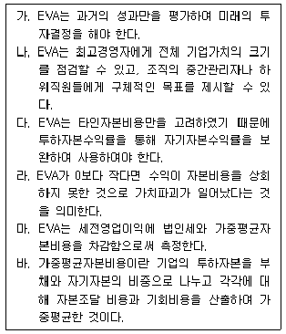
- 가, 나, 다, 라
- 가, 나, 다, 마
- 가, 라, 마, 바
- 나, 다, 라, 마
- 나, 다, 라, 바
(정답률: 24%)
16. 유통기업의 경영전략을 계층적으로 구분할 때, 다음 중에서 사업전략(business strategy)에 해당하는 것은?
- 최근 외부적 환경을 고려하여 새로운 업태를 개발한다.
- 우리기업과 유사한 경쟁기업을 인수한다.
- PB상품을 안정적으로 공급받기 위해 제조기업에 지분투자를 한다.
- 경쟁관계에 있는 기업과 경쟁하기 위해 고급화를 추구한다.
- 판매원의 자질향상을 위해 교육과 근로환경을 개선한다.
(정답률: 29%)
17. 유통기업의 조직구조에 대한 설명으로 가장 올바른 것은?
- 조직의 유형에는 조직구성원의 역할에 대해 정형화한 비공식조직과 조직구성원의 사회적 관계나 네트워크에 의해서 자연스럽게 형성된 공식조직이 있다.
- 유통기업이 조직을 설계할 때, 관리자가 효과적으로 관리할 수 있는 업무량을 기준으로 관리의 범위를 결정한다.
- 조직구조에서 관리의 범위와 조직계층의 수 사이에는 비례관계가 있다.
- 조직의 부문화는 기능별 부문화, 지역별 부문화, 고객별 부문화 및 제품별 부문화 등으로 구분한다.
- 매트릭스조직은 복수의 부문화조직을 결합하여 각 부문화의 장점을 활용하기 위한 구조로서 최고경영자의 조정과 통합능력은 상대적으로 덜 필요로 한다.
(정답률: 45%)
18. OO대형마트에서 판매하는 XX브랜드의 청바지의 가격과 거래량에 미치는 영향을 분석하고자 한다. 다음의 상황에 따른 변화 예측에 대해 올바르게 기술한 것은? (단, 청바지는 정상재이고, 제시된 조건 이외의 변화는 없다고 가정한다) (문제 오류로 실제 시험에서는 2, 3번이 정답처리 되었습니다. 여기서는 2번을 누르면 정답 처리 됩니다.)
- XX청바지 원재료의 가격이 상승하고 청바지에 대한 소비자의 선호도가 높아짐에 따라, 구매담당자는 XX청바지의 거래량이 증가할 것이라 예측하였다.
- XX청바지 원재료의 가격이 하락하고 XX청바지를 구매하는 소비자들의 소득수준이 높아짐에 따라, 구매담당자는 XX청바지의 거래량이 증가할 것이라 예측하였다.
- XX청바지와 경쟁관계에 있는 YY청바지의 가격이 올랐고 XX청바지를 생산하는 기업의 생산라인을 확장하였다면, 구매담당자는 XX청바지의 거래량이 증가할 것이라고 예측하였다.
- XX청바지를 공급하는 기업이 제품광고를 확대하였다면 거래량은 증가하겠지만 가격은 그대로일 것이라고 구매담당자는 예측하였다.
- XX청바지의 가격이 향후에 상승할 것이라 예측된 다면, 구매담당자는 XX청바지의 거래량이 감소할 것이라고 예측하였다.
(정답률: 75%)
19. 유통산업의 경쟁환경에 대한 설명으로 가장 올바른 것은?
- 수평적 경쟁은 유통경로의 구성원인 제조업체와 도매상 사이, 도매상과 소매상 사이, 제조업체와소매상 사이의 경쟁을 의미한다.
- 유통경로에서 동일한 수준에 놓여 있는 점포간의 경쟁은 다른 말로 업종간 경쟁이라고도 한다.
- 경로시스템간 경쟁은 경로구성원들 사이에서의 경쟁이 아닌 유통경로 조직형태의 경쟁이다.
- 업종간 경쟁이 유통산업에 주목을 받고 있는 이유는 스크럼블드 머천다이징(scrambled merchandising)이 확산되기 때문이다.
- 경로시스템간 경쟁은 유통경로에서 비슷한 경로수준의 통합시스템을 통한 경쟁이다.
(정답률: 46%)
20. 다음의 다단계판매 행위 중 합법적인 것은?
- 판매원에게 하위판매원 모집 자체에 대하여 경제적 이익을 지급한다.
- 판매원에게 가입비, 판매 보조 물품, 개인 할당판매액, 교육비 등 그 명칭이나 형태와 상관없이 15만원까지 의무를 부과할 수 있다.
- 판매원과 재화 등의 판매계약을 체결한 후 그에 상응하는 재화 등을 정당한 사유 없이 공급하지 아니 하면서 후원수당을 지급한다.
- 판매원에게 재화 등을 그 취득가격이나 시장가격보다 10배 이상 높은 가격으로 판매하면서 그에 따라 비례적으로 후원수당을 지급한다.
- 판매원 또는 판매원이 되려는 사람에게 합숙교육을 실시한다.
(정답률: 52%)
21. 유통경로 설계에 있어서 기능위양이론에 대한 올바른 설명은?
- 제조업자가 유통구성원을 직접 고용하는 경우에는 중간상을 이용하는 것보다 매출증가에 따른 평균 유통비용이 감소하는 경향이 있다.
- 제조업자가 유통구성원을 직접 고용하는 경우에는 중간상을 이용하는 것보다 매출증가에도 불구하고 평균유통비용이 일정한 경향이 있다.
- 제조업자가 유통구성원을 직접 고용하는 경우에는 중간상을 이용하는 것보다 매출증가에 따른 평균 유통비용이 증가하는 경향이 있다고 한다.
- 제조업자가 중간상을 이용하는 경우에 매출액 증가에도 불구하고 평균유통비용은 일정한 경향이 있다.
- 제조업자가 중간상을 이용하는 경우에 매출액 증가에 따라 평균유통비용은 증가하는 경향이 있다.
(정답률: 38%)
22. 기업의 비용에 대한 설명으로 가장 올바른 것은?
- 평균총비용이 가장 낮은 수준에서 생산할 때 기업은 최적생산수준이 된다.
- 한계비용곡선은 평균고정비용곡선의 최저점을 통과한다.
- 평균비용이 한계비용보다 높다면 기업은 생산량을 늘려야 한다.
- 생산량이 적을 때 장기평균비용이 높은 이유는 가변비용이 높기 때문이다.
- 기업의 장기공급비용은 고정비용과 가변비용으로 구성되어 있다.
(정답률: 41%)
23. 인사평가방법인 목표관리(MBO)의 단계별 순서를 가장 바르게 연결한 것은?
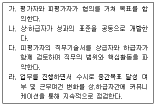
- 다 - 나 - 가 - 라
- 라 - 다 - 가 - 나
- 가 - 나 - 다 - 라
- 나 - 가 - 라 - 다
- 다 - 가 - 나 - 라
(정답률: 31%)
24. 다양한 운송수단 중 자동차 운송의 특징에 해당하는 것만으로 묶인 것은?
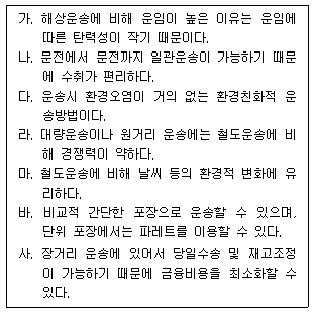
- 가, 다, 마
- 나, 라, 바
- 가, 나, 다
- 라, 마, 바
- 마, 바, 사
(정답률: 52%)
25. 로지스틱스(logistics)에 대한 설명으로 올바르지 않은 것은?
- 포터(Porter)에 의하면 로지스틱스를 기업의 지원적 활동(supportive activity)으로 분류하였다.
- 로지스틱스는 제조업체가 고려해야 할 고객서비스 구성요소로서 재고이용 가능성, 서비스 제공능력, 서비스 질 등에 영향을 미치는 요소이다.
- 로지스틱스는 기업물류의 총체적 관점에서 관리해야 하는데, 그 이유는 비용과 밀접한 관련이 있기 때문이다.
- 로지스틱스의 일부로서 재고관리는 불규칙한 수요에 대응하고 안정적인 노동력의 유지와 생산체제 구축에 도움이 된다.
- 로지스틱스에서 창고는 보관, 포장, 상품분류, 가공 등의 활동을 수행하는 장소이기도 하다.
(정답률: 37%)
2과목: 상권분석
26. 점포입지를 위해 장소를 선택한 이후, 소매업체들은 그 장소에 몇 개의 점포를 운영해야할 것인지 결정해야 한다. 이에 대한 설명으로 적합한 것을 묶은 것은?
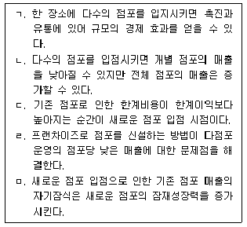
- ㄱ,ㄴ
- ㄴ,ㄷ
- ㄷ,ㄹ
- ㄹ,ㅁ
- ㄱ,ㅁ
(정답률: 60%)
27. 전문점과 편의점에 대한 비교설명 중 올바르지 않은 것은?
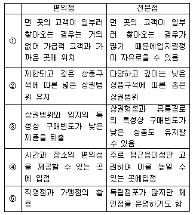
- ①
- ②
- ③
- ④
- ⑤
(정답률: 68%)
28. CST map 기법을 사용하는 경우의 유용성에 대해 올바르게 설명한 것은?
- 상권내 유동인구의 수와 분포의 파악이 용이하다.
- 지역 내 점포 사이의 경쟁정도를 유추할 수 있다.
- 점포의 형태와 매장의 최적 크기를 선정할 수 있다.
- 유동인구에 대한 판촉전략을 수립할 수 있다.
- 사회경제적 특성을 제외한 인구통계적 분석이 가능하다.
(정답률: 20%)
29. 상권 관련 정보를 획득하는 과정에서 소비잠재지수(spending potential index)에 대한 옳은 설명은?
- 사람들의 라이프스타일과 구매행동에 대한 센서스를 취합하여 지역적으로 배분한 정보 제공
- PB의 평균소비량과 NB의 평균소비량의 비교한 정보 생성
- 특정제품에 대한 지수가 100 이상인 경우 그 제품 소비량이 전국 평균보다 낮다고 해석
- 소비자의 인구통계학적 정보와 인구표본집단의 정보를 비교하여 얻은 자료를 활용한 정보의 생성
- 지리적 정보를 검색/저장한 결과를 지도에 표시하여 특정 지역의 공간적인 특징을 제공
(정답률: 13%)
30. 신영이는 상권을 분석하기 위해 고민하고 있다. 현재 주어진 정보는 신영이가 살고 있는 도시A의 인구, 인근에 있는 두 도시 B와 C의 인구, A에서 B, A에서 C까지 이동하는 각각의 거리이다. 신영이가 현재의 상권에서 분석할 수 있는 내용은?(단, 도시 A는 도시 B와 C 사이임)
- 도시A의 인근 두 도시 B, C가 서로에게 흡수되는 구입액의 크기
- 도시A에서 인근 두 도시 B, C 중 하나를 선택하는 상권의 한계점
- 각 도시에서 동일한 품목을 판매하는 상점 중 신영이가 선택하고 싶은 상점
- 신영이가 물품구매를 위해 B, C 도시 중 하나로 이동하게 되는 통행 횟수
- 신영이가 인근 도시 B, C 중 특정 도시에서 필요 한 물품을 구매하는 횟수
(정답률: 30%)
31. 물리적 점포가 존재하는 경우와 존재하지 않는 경우의 상권에 대한 설명 중 올바르지 않은 것은?
- 물리적 점포가 존재하는 경우 잠재상권, 확률상권, 현재상권 등으로 구분하여 분석하기도 한다.
- 상권의 가장 단순한 형태인 일반상권은 지역 내존재하는 여러 점포 중 가장 큰 점포를 이용하여 상권을 표기하는 방법이다.
- 물리적 점포가 없는 경우 상권은 인터넷, 우편 등의 접촉수단에 대한 접근 가능성에 더 많은 영향을 받는다.
- 무점포 판매의 경우 제품을 홍보하고 주문하는 수단이 발전함에 따라 상권으로 평가할 수 있는 범위가 넓어지게 되었다.
- 근대 이전 과거를 이용하여 상권을 분석한다면 시전을 점포상으로 보고 상권을 분석해볼 수 있다.
(정답률: 37%)
32. 도매업의 입지에 대한 설명 중 올바른 것은?
- 공급물량과 수요물량이 적고 개별화 정도가 높으면 수집 및 분산 모두 공간적 접근성이나 정보적 접촉이 유리한 지역이 선정된다.
- 공급물량은 크고 수요물량이 적으며, 중량이 무겁고 부피가 큰 생산재인 경우 상물분리가 명확하지 않아 입지선정이 어렵다.
- 공급물량은 적고 수요물량이 크며 규격화 정도가 낮은 상품의 경우 생산지에 가까운 곳에 입지를정할수록 수송비 부담이 낮아 선호된다.
- 수요물량과 공급물량 모두 크며 규격화 정도가 높은 상품의 경우 운송물량이 많아 생산지와 소비지 모두 멀리 떨어지는 것이 좋다.
- 도매업의 입지는 수집과 분산의 기능을 수행하기에 적합한 지역을 선택해야 하므로 주로 판매에 적합한 지역을 선택한다.
(정답률: 20%)
33. 상권에 관한 다음 이론들 가운데 설명하는 내용이 다른 것들과 가장 큰 차이가 나는 것은?
- Reilly의 소매인력법칙
- Converse의 수정소매인력법칙
- Cohen과 Applebaum의 상권경계설정 모형
- Huff의 상권확률모델
- Apollonius의 원에 의한 상권
(정답률: 43%)
34. 점포 입지에 영향을 주는 유통활동 중 상류와 물류에 대한 설명 중 올바르지 않은 것은?
- 상류는 상적 유통의 준말로 유통의 거래에 관한 제도적 측면의 기능을 설명하는 표현이다.
- 물류는 물적 유통의 준말로 제품의 실질적 이동 및 보관에 관련된 사항을 설명하는 표현이다.
- 기업이익창출 관점에서 볼 때 상류는 이익을 극대화하고, 물류는 비용을 극대화하는 목적이 있다.
- 상적 유통활동은 상업활동을 통한 이익의 최대화를 지향하게 된다.
- 물적 유통활동은 물적교류권의 축소와 수송거리의 단축화를 지향한다.
(정답률: 49%)
35. 점포의 유형과 주요 특성으로 올바르지 않은 것은?
- 한국의 백화점은 도심지역에 위치한 형태가 많으며 취급상품과 서비스를 고급화하여 다른 업태와 차별화한다.
- 하이퍼마켓은 1960년대 유럽에서 개발된 식품과 비식품을 종합화한 대형 슈퍼마켓의 형태로 넓은 입지가 필요하다.
- 아울렛 스토어는 제조업자가 재고를 처분하기 위해 일류 브랜드 상품을 특별할인가로 판매하는 것으로 주로 도심에 출점(개점)한다.
- 회원제 할인점은 회원들에게 회비를 받고 낮은 가격으로 제품을 공급하는 점포로 넓은 매장을 필요로 한다.
- 편의점은 매우 작은 상권을 가지고 있는 점포로 제품구색의 폭은 넓지만 깊이는 낮은 점포를 말한다.
(정답률: 36%)
36. 상권에 대한 설명으로 올바른 것만 선택된 것은?
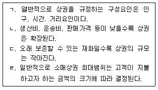
- ㄱ,ㄷ
- ㄴ,ㄷ
- ㄱ,ㄴ
- ㄴ,ㄹ
- ㄱ,ㄹ
(정답률: 34%)
37. 선매품을 대상으로 Converse의 수정소매인력법칙을 적용 한 설명으로 잘못된 것을 고르시오.
- 소비자에게서 두 도시까지의 거리가 같을 경우 두 도시별 구매 금액의 비율은 인구비율과 유사하다.
- 상품을 구매할 때 현재 거주하는 소도시와 인근에 위치한 대도시로 구매금액이 분산된다.
- 대도시 A와 B 사이에는 소비자가 어느 도시로 상품을 구매하러 이동할지에 대한 상권분기점이 존재한다.
- 대도시와 위성도시에서 위성도시의 소비지출은 인구에 비례하고 이동거리 제곱에 반비례한다.
- Converse는 Reilly 법칙의 매장면적 개념을 수정하여 대도시와 중소도시의 매장면적 비율이 매출액 비율과 비례한다고 보았다.
(정답률: 40%)
38. 소매포화지수(index of retail saturation, IRS)에 대해서 올바르게 설명한 것은?
- 시장 내부의 질적인 형태의 경쟁을 주로 측정하고 있어 양적인 측면을 보완하여야 한다.
- 미래의 신규수요를 반영함으로써 시장에서의 잠재 성장력을 판단함에 중요한 지표로 쓰인다.
- 거주자들이 지역시장 밖에서 하는 쇼핑정도나 수요를 측정, 분석하는 데에 유용한 정보를 제공해 준다.
- 스포츠용품이나 가구점 등 전문화된 점포에 적용하는 것이 일반적인 전통 슈퍼마켓에 적용하는 것보다 어렵다.
- 특정 상품에 대한 판매가 매년 일률적으로 증가하는 시장에 적용하여야 이 기법의 효과를 명확히 얻을 수 있다.
(정답률: 37%)
39. 상권분석을 위한 유추법의 절차에 대한 설명이다. 절차의 순서로 알맞은 것은?
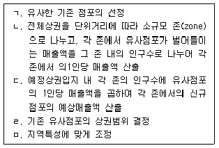
- ㄱ → ㄴ → ㄷ → ㄹ → ㅁ
- ㄱ → ㄷ → ㄴ → ㄹ → ㅁ
- ㄱ → ㄹ → ㄴ → ㄷ → ㅁ
- ㄱ → ㄴ → ㄷ → ㅁ → ㄹ
- ㄱ → ㄷ → ㄴ → ㅁ → ㄹ
(정답률: 35%)
40. 최근 민주는 조금 더 넓은 집으로 이사를 가려고 결정하였다. 현재 민주가 살고 있는 도시는 주변에 인구 250만 명인 A시, 1000만명인 B시 사이에 있는 위성도시이다. 현재 민주네 집에서 A시까지는 12km, B시까지는 24km 떨어져 있다고 할 때 민주의 이사에 따른 변화에 대해 올바르게 설명한 것은?
- A시에서 13km, B시에서 23km 떨어진 곳으로 이사를 하면 B시의 점포를 이용할 가능성이 커진다.
- A, B도시를 연결하는 직선상에서 B시 쪽으로 이사를 가야 A시와 B시의 점포이용에 대한 무차별적인 선택을 할 수 있다.
- 현재 거주하는 집에서 민주는 A시에서 점포를 이용할 가능성이 더 높았다고 판단할 수 있다.
- B시 점포를 더 많이 이용하려면 A시와 B시까지의 거리가 1:2비율로 떨어진 지역을 선택하면 된다.
- 민주가 A시 점포를 더 많이 이용하려면 역설적으로 B시와 더 가까운 곳으로 이사 가야 한다.
(정답률: 25%)
41. 최근 20~30년 동안 선진국의 도시에서 나타난 소매업의 변화모습 중 올바른 것을 선택한 것은?
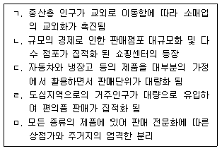
- ㄱ,ㄴ,ㄷ
- ㄱ,ㄴ,ㄹ
- ㄴ,ㄷ,ㄹ
- ㄴ,ㄹ,ㅁ
- ㄷ,ㄹ,ㅁ
(정답률: 17%)
42. 소매점 출점 형태 중 자산가치 상승과 영업에 대한 안정, 점포 내부·외부 외관에 대한 계획성 있는 조정 등의 장점은 있지만 초기 투자비용이 높고 상권변화에 대한 대응이 문제가 되는 형태는 무엇인가?
- 부지매입
- 부지임차
- 건물임차
- 기존점포 인수
- 전략적 제휴
(정답률: 63%)
43. 편의점에 대한 설명 중 올바른 것은? (문제 오류로 실제 시험에서는 2, 3, 4번이 정답처리 되었습니다. 여기서는 2번을 누르면 정답 처리 됩니다.)
- 최근에는 고객이 원하는 낮은 가격을 위해 점포임대료가 저렴한 교외입지에 많이 개점한다.
- 편의점의 체인화전략은 고객에게 장소적 편의제공보다 매출신장을 위한 전략이다.
- 최초의 편의점은 미국의 세븐일레븐으로 오전 7시에서 오후 11시까지 영업을 한다고 해서 붙여진 이름이다.
- 우리나라 편의점의 시간대별 매출 최고의 시간대는 오후 8시부터 자정까지보다 오후 4시부터 오후 8시까지의 시간대라고 한다.
- 상품구색은 산업환경 및 소비자의 구매성향에 맞게 갖추는 것보다 편의점 본부에서 권장하는 품목을 우선적으로 갖추어야 한다.
(정답률: 70%)
44. Christaller가 제시한 중심지 이론의 기본적 가정에 대한 설명 중 올바르게 설명한 것은?
- 동질적 평면으로 한 지역의 교통수단은 오직 하나이며 운송비는 거리에 반비례하는 것으로 가정한다.
- 지역의 형태에 따라 중심까지 소요되는 시간의 차이가 있기 때문에 소비자가 중심지로 이동하는 거리는 최소화될 수 없다는 것으로 가정한다.
- 주민의 구매력과 소비형태는 동일할 수 없다는 것으로 가정한다.
- 인구는 공간상에 균일하게 분포하고 최소의 비용과 최대의 이익을 추구하는 경제인이라고 가정한다.
- 어떤 특정 중심지는 다른 중심지에 비해 초과이윤을 얻을 수 있다고 가정한다.
(정답률: 52%)
45. 허프모델을 이용할 경우 다음 지역의 점포 중에서 A할인점을 찾을 확률은 몇 %인가? 이때 각 점포에서 동일한 제품을 판매하는 매장을 기준으로 하고, 거리에 대한 모수와 매장면적에 대한 모수는 각각 3과 1이라 가정한다. 또한 거리와 매장면적은 서로 반비례하는 특성을 가지고 있다.
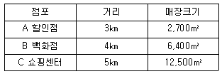
- 25.0%
- 30.0%
- 33.3%
- 42.0%
- 51.5%
(정답률: 30%)
3과목: 유통마케팅
46. 상품속성에 따른 유통경로와 관련된 설명 중 가장 올바르지 않은 것은?
- 일반적으로 낮은 단가를 가진 편의품들은 전속적 유통경로가 필요하다.
- 신선상품의 경우 이동과 취급을 지연할수록 부패의 위험이 증가하므로 직접적 유통경로가 필요하다.
- 중량이 많이 나가거나 취급에 어려움이 있는 경우 직접유통경로를 이용하는 것이 좋다.
- 기술적으로 복잡한 상품의 경우 고객에 대한 설명을 위해 직접적인 유통경로가 필요하다.
- 표준화의 정도가 낮을수록 유통경로에서 보다 많은 기술적인 지식과 서비스가 제공되어야 한다.
(정답률: 31%)
47. 소비자의 구매행동에 영향을 미치는 변수에 대한 설명으로 가장 올바르지 않은 것은? (문제 오류로 실제 시험에서는 3, 4번이 정답처리 되었습니다. 여기서는 3번을 누르면 정답 처리 됩니다.)
- 소비자의 특성변수로는 직업, 사회계층, 가족관계 등과 같은 인구통계변수와 소비자의 라이프스타일 개성 등과 같은 변수들이 해당된다.
- 소비자의 심리변수로는 제품 및 서비스에 대한 소비자 욕구, 태도, 구매의도, 제품이나 대체안의 평가기준 등이 있다.
- 소비자의 심리변수는 정보처리과정보다 구매의사 결정과정에 더 중점적인 역할을 하므로 소비자 의사결정변수라고 한다.
- 소비자의 행동 영향변수 중에서 구매의사결정에 가장 결정적인 역할을 하는 변수는 가족이나 지인의 추천과 같은 준거집단의 영향력이다.
- 문화 같은 사회적 영향변수는 소비자행동의 근간이라고 말할 수 있는 행동규범을 제시해 준다.
(정답률: 53%)
48. 상품의 판매촉진을 위한 광고(advertising)에 대한 설명으로 가장 올바른 것은?
- 메시지가 복잡한 경우에는 빈도(frequency)보다는 도달범위(reach)를 높이는 것이 바람직하다.
- 광고의 노출빈도가 어느 수준을 넘어서면 광고효과가 떨어지는데 이러한 현상을 광고의 이월효과(carryover effect)라고 한다.
- 유머소구(humor appeal)광고는 소비자의 주의를 끄는데 효과적이며 제품 특성을 이해시키는 메시지를 전달하기에 적합하다.
- 인포머셜(informercial)이란 의도적으로 제품에 대한 부정적인 정보를 선별하여 다양한 근거를 통해 반박하는 형태의 광고를 말한다.
- 총접촉률(gross rating points；GRP)은 도달범위(reach)에 도달횟수(frequency)를 곱한 것이다.
(정답률: 16%)
49. 머천다이징 관리자가 수행해야 할 주요 업무사항으로 가장 올바르지 않은 것은?
- 사회ㆍ경제적 환경과 경쟁상황 및 시장 트렌드 파악
- 효율적 적정 재고수준 결정 및 판매에 대비한 재고수준 관리
- 우수한 제품의 원활한 조달을 위한 지속적인 바이어 관리 및 협력
- 효율적 매입을 위한 공급업체와의 관계유지 및 중간상 판촉의 계획 수립 및 진행
- 향상된 머천다이징을 위한 이번 회기의 성과 평가 및 다음 회기를 위한 제품선정
(정답률: 13%)
50. 지속성 상품의 매입시스템에 대한 설명 중 옳은 것은?
- 단품차원에서 이전 시즌의 자료를 확보하기가 어렵다.
- 실제 월말 재고와 조정월말재고를 동일하게 만들필요가 있다.
- 식료품점이나 할인점에서 취급하는 대부분의 품목은 지속성 상품의 매입시스템을 적용하기에 적합하다.
- 예측이 어려운 '주문 - 접수 –주문' 의 주기를 따르고 있다.
- 유행성 상품과 개인적 취향이 확실한 패션성 상품에 적용한다면 효율적 재고관리가 가능하다.
(정답률: 35%)
51. 기존의 구매경험이나 내적 탐색정보와 같이 소비자의 기억 속에 저장되어 있는 점포나 상표를 일컫는 용어는?
- 결합상표군(combination set)
- 자극상표군(stimulus set)
- 환기상표군(evoked set)
- 경쟁상표군(competition set)
- 고려상표군(consideration set)
(정답률: 35%)
52. 제품의 포트폴리오 계획 방법 중 BCG매트릭스에 대한 설명으로 가장 바르지 않은 것은?
- 가로축은 판매되는 제품에 대한 상대적 시장 점유율을, 세로축은 제품이 판매되는 시장의 평균성장률로 하여 구성된다.
- 별(Star), 자금젖소(Cash Cow), 물음표(QuestionMark), 개(Dog)의 네 가지 영역으로 구분된다.
- 자금젖소(Cash Cow)는 저성장 고점유율을 보이는곳으로서, 투자가 필요한 다른 전략사업단위에 투자할 자금을 창출할 수 있다.
- 별(Star)은 시장 점유율이 높을 뿐만 아니라 높은 성장률이 기대되므로 급격한 성장을 유지하기 위해 많은 투자가 필요한 부분이다.
- 물음표(Question Mark)는 시장의 성장률은 높지만 낮은 시장 점유율을 보이고 있는 곳으로 시장지위가 낮으므로 가능한 빨리 철수해야 하는 부분이다.
(정답률: 49%)
53. 포지셔닝의 유형과 그 설명으로 가장 거리가 먼 것은?
- 제품 편익에 의한 포지셔닝이란 제품이나 점포의 외형적 속성이나 특징으로 소비자에게 차별화를 부여하는 것을 말한다.
- 이미지 포지셔닝이란 고급성이나 독특성처럼 제품이나 점포가 지니고 있는 추상적인 편익으로 소구하는 방법을 말한다.
- 사용상황 포지셔닝이란 제품이나 점포의 적절한 사용상황을 묘사하거나 제시함으로써 소비자에게 부각시키는 방식이다.
- 경쟁제품 포지셔닝이란 소비자의 지각 속에 위치하고 있는 경쟁사와 명시적 혹은 묵시적으로 비교하게 하여 자사 제품이나 점포를 부각시키는 방식이다.
- 품질 및 가격 포지셔닝이란 제품 및 점포를 일정한 품질과 가격수준으로 포지셔닝하여 최저가격 홈쇼핑이나 고급전문점과 같이 차별적 위치를 확보하는 방식이다.
(정답률: 31%)
54. 최근 정년퇴직을 한 A는 점포를 얻어 사과 장사를 시작했다. 목표로 하는 이익을 얻기 위해 매월 어느 정도의 판매량과 판매액을 달성해야 하는가?
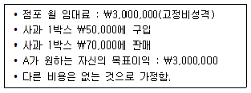
- 300박스 - ₩ 21,000,000
- 400박스 - ₩ 21,000,000
- 450박스 - ₩ 25,000,000
- 500박스 - ₩ 27,000,000
- 600박스 - ₩ 31,000,000
(정답률: 35%)
55. 구매자-공급자 간의 장기협력관계를 형성하고 유지하기 위한 중요 요인에 대한 설명으로 가장 올바르지 않은 것은?
- 관계를 맺고 있는 당사자들에 의해 어느 정도 수용되는 행동규칙인 관계규범이 설정되어 있어야한다.
- 대부분의 거래관계는 계약에 의해 실현되지만 장기협력관계를 유지하기 위해서는 거래윤리 같은 거래지침이 필요하다.
- 상대방이 정직하여 거래의무를 성실히 수행할 것이라는 신념이나 확신인 상호간의 신뢰가 형성되어 있어야 한다.
- 상대방이 당사자와의 거래를 통해 높은 수익을 창출하거나, 거래처 변경을 위한 전환비용이 높은 이유로 기존의 거래 당사자와 깊은 협력관계를 유지하고자 하는 관계의 몰입정도가 높아야 한다.
- 한 경로구성원이 거래상대방에게 의존하는 정도와 거래상대방이 자신에게 의존하고 있는 정도가 균형을 이루어야 한다.
(정답률: 50%)
56. e-CRM과 기존 CRM의 차이점으로 가장 올바른 것은?
- CRM은 데이터웨어하우스 구축, TV 등 매체광고, 우편발송, 텔레마케팅 등으로 적은 비용이 소요되는 반면 e-CRM은 시스템 구축, 이메일 마케팅 등으로 많은 비용이 소요된다.
- 자료수집 측면에서 CRM은 자료수집 채널이 다양하고 분산된 반면 e-CRM은 인터넷의 웹을 기반으로하는 통합 채널을 지향한다.
- CRM은 e-CRM에 비하여 시간적ㆍ지역적 제약에서 비교적 자유롭다.
- CRM은 e-CRM과는 달리 인터넷 상에서 간단한 절차에 의해 고객요청을 신속하게 실시간으로 처리할수 있다.
- 자료분석 측면에서 CRM은 웹로그 분석(web log analysis)이 가능하기 때문에 실시간으로 고객성향 및 행동을 분석할 수 있다.
(정답률: 47%)
57. 유통마케팅 조사의 방법에 대한 내용 중 가장 옳지 않은 것은?
- 질문법은 가장 많이 사용되는 정보수집 방법으로 응답자에게 질문표를 이용해서 직접 질문하여 필요한 정보를 수집하는 것으로, 우송법, 전화법, 면접법 등이 있다.
- 실험법은 실제로 조사대상에게 어떠한 반응을 하도록 시도해보고 그 결과로부터 필요한 정보를 입 수하는 방법이다.
- 소비자 패널 조사는 다양한 소비자 그룹에 대해 조사대상을 지속적으로 변경하며 새로운 제품 및 조사항목에 관해 구매나 사용동향을 조사한다.
- 관찰법은 조사자가 조사 대상자를 현장에서 일정 한 기간 동안 관찰하면서 있는 그대로의 사실을 수집하는 방법이다.
- 동기조사는 특정 태도와 행동을 유발하는 심층심리에 접근하고자 하는 것으로 ‘why 리서치’라고 도 하며, 심층면접법, 집단면접법 그리고 투영기법 등이 이용된다.
(정답률: 35%)
58. 상품을 디스플레이할 때 고려하여야 할 원칙 중 옳지 않은 것은?
- 디스플레이의 강조점은 고객의 눈을 끌게 하는 포인트로 상품의 장점을 잘 알리기 위해서는 강조점을 많이 준비하는 것이 좋다.
- 색다름을 강조하려면 형태, 크기, 색채 등에 있어대비를 시키는 것이 좋다.
- 선이나 색상, 형태, 짜임 등을 통해 통일성을 유지하는 것이 좋다.
- 선, 형태, 무게, 색채 등의 디스플레이 요인을 잘 결합함으로써 품종별, 소재별, 용도별, 가격별 조화를 이룰 수 있다.
- 중앙축을 중심으로 좌우로 무게가 같아지도록 형태, 색채, 크기 등의 요소를 이용하는 것을 균형이라고 한다.
(정답률: 34%)
59. 다음의 가격결정 기법으로 가장 적합한 내용은?
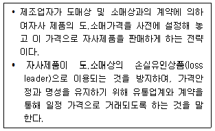
- 오픈 가격 정책(open price policy)
- 재판매 가격 유지 정책(resale price maintenance policies)
- 이분가격 정책(two party price policy)
- 노획가격(captive pricing)
- 묶음가격(price bundling)
(정답률: 14%)
60. 제품전략에 대한 설명으로 가장 올바르지 않은 것은?
- 제품라인은 유사기능을 수행하거나, 동일 고객집단에게 판매되거나, 동일 유통경로를 통해 판매되거나, 또는 비슷한 가격대에서 판매되는 등의 이유로 서로 밀접하게 관련된 제품들의 집합을 말한다.
- 제품라인 길이는 제품라인에 포함된 품목들의 수를 말하는 것으로 라인 내 브랜드의 총수와 각 제품들이 제공하는 품목들의 수를 포함한다.
- 라인충원전략(line filing)이란 기존의 제품라인 범위 내에서 더 많은 품목들을 추가하는 것이고 라인확대전략(line stretching)이란 현재의 가격대 이상으로 제품라인의 길이를 늘리는 것이다.
- 몇 개의 제품라인을 보유한 기업들은 제품믹스를 구성하는데 제품 포트폴리오란 특정 판매업자가 판매용으로 시장에 제공하는 제품라인과 품목들을 합한 것을 말한다.
- 제품믹스는 넓이, 길이, 깊이, 일관성 등 4가지 주요차원을 갖는데 이 중 일관성은 다양한 제품라인들이 최종용도, 생산요건, 유통경로 등에서 얼마나 밀접하게 관련성이 있는가를 의미한다.
(정답률: 7%)
61. 마케팅 조사에서 표본선정에 관한 설명으로 가장 적절하지 않은 것은?
- 표본추출과정은 ‘모집단의 설정-표본프레임의 결정-표본추출방법의 결정-표본크기의 결정-표본추출’의 순서로 이루어진다.
- 표본의 크기가 커질수록 조사비용과 조사시간이 증가하며, 표본오류 또한 증가한다.
- 비표본오류에는 조사현장의 오류, 자료기록 및 처리의 오류, 불포함 오류, 무응답 오류가 있다.
- 층화표본추출은 확률표본추출로, 모집단을 서로 상이한 소집단들로 나누고 이들 각 소집단들로부터 표본을 무작위로 추출하는 방법이다.
- 표본프레임(sample frame)이란 모집단에 포함된 조사대상자들의 명단이 수록된 목록을 의미한다.
(정답률: 25%)
62. 고객 가치를 창출하고 고객관계를 구축하기 위한 마케팅 경로 구성에 대한 설명으로 가장 올바르지 않은 것은?
- 가치전달 네트워크(value delivery network)는 전체 거래시스템의 성과를 향상시키기 위해 ‘파트너관계’를 형성한 제조업체, 공급업자, 유통업자, 최종고객 등으로 구성된다.
- 마케팅 경로 또는 유통경로란 제품 혹은 서비스를 개인 소비자나 기업고객이 사용, 소비할 수 있도록하는 상호 의존적인 일체의 조직을 말한다.
- 유통경로 구성원은 제품 및 서비스의 공급을 구매자의 수요와 분리시키는 시간, 공간, 소유의 차이를 극복하게 함으로써 가치를 부가한다.
- 제품 또는 제품의 소유권을 최종 구매자에게 전달하는 업무를 수행하는 각각의 중간상을 경로 조직(channel organization)이라 한다.
- 경로 구성원 간에 목표, 역할, 보상에 대한 의결 불일치는 경로갈등을 초래하는데 특히, 경로상 같은 수준에 있는 기업 사이에서 발생하는 갈등을 수평적 갈등이라 한다.
(정답률: 4%)
63. 판매촉진에 대한 설명으로 가장 올바르지 않은 것은?
- 단기적인 소비자의 구매유도가 아닌 장기적인 고객관계 향상을 위한 판매촉진의 경우 유통점에서 의 구매시점 판촉 또는 프리미엄과 같은 소매상판매촉진이 효과적이다.
- 주요 소비자 판촉도구에는 샘플, 쿠폰, 현금환불, 가격할인, 프리미엄, 단골고객 보상, 구매시점 진열과 시연, 콘테스트, 추첨 등이 있다.
- 중간상 판매촉진의 목표는 소매상들이 제조사의 신규 품목 취급, 적정 재고의 유지, 소매환경에서의 제품 광고 또는 더 넓은 공간을 할당하도록 유도하는 데 있다.
- 영업사원 판매촉진의 목표는 기존 제품 및 신제품에 대한 영업사원의 노력 및 지원을 더 많이 확보하거나 영업사원으로 하여금 신규 거래처를 개발하도록 유도하는 데 있다.
- 판매촉진은 광고, 인적판매 또는 다른 촉진믹스도구들과 함께 사용하는 것이 일반적인데, 중간상판매촉진과 영업사원 판매촉진은 주로 인적판매과 정을 지원한다.
(정답률: 45%)
64. 유통경로에서 구매자와 판매자의 관계발전모형에 기초한 5단계를 설명한 것은?
- 인지 - 탐색 - 확장 - 몰입 - 종식
- 인지 - 탐색 - 몰입 - 확장 - 종식
- 탐색 - 인지 - 몰입 - 확장 - 종식
- 탐색 - 확장 - 인지 - 몰입 - 종식
- 탐색 - 몰입 - 확장 - 인지 - 종식
(정답률: 34%)
65. 동기부여 이론에 관한 설명으로 가장 적절하지 않은 것은?
- 앨더퍼(Alderfer)의 ERG이론에서는 인간의 욕구를 존재욕구, 관계욕구, 성장욕구로 구분하고 있으며, 충족-진행의 원리와 좌절-퇴행의 원리를 제시하고 있다.
- 핵크만(Hackman)과 올드햄(Oldham)의 직무특성이 론에 의하면 성장욕구수준이 높은 사람은 직무정체성이 높은 직무를 수행할 때 동기부여수준이 높아진다.
- 매슬로우(Maslow)의 가장 높은 욕구단계는 자아실현과 관련된 욕구이다. 자아실현은 자신의 기술이나 능력 그리고 잠재력을 최대한으로 활용하고자 하는 욕구를 말한다.
- 허쯔버그(Herzberg)의 2요인 이론(two factor theory)에 의하면 급여, 성취감, 다른 사람들의 인정, 승진, 일 그 자체, 성장 및 발전 등과 같은 위생요인이 충족되면 만족도가 증가한다.
- 맥그리거(D. McGregors)는 인간의 본성에 대한 두가지 서로 다른 견해를 제기하였다. 부정적인 관점을 X이론, 긍정적인 관점을 Y이론이라 한다.
(정답률: 29%)
66. 고객세분화의 유형 중 행동적 세분화에 대한 설명으로 가장 올바르지 않은 것은?
- 소비자들의 사회계층 및 라이프스타일에 따른 생활양식을 바탕으로 구매행동과 관련된 특징들을 세분화한 것이다.
- 행동적 세분화의 한 유형인 효익 세분화(benefit segmentation)는 구매자들을 그들이 제품으로부터 추구하는 혜택 혹은 편익에 따라 구분하는 것이다.
- 행동적 세분화의 한 유형인 사용상황 세분화는 구매자들의 제품정보 습득경로, 실제 구매여부 또는 구매한 물건을 사용하는 상황에 따라 시장을 나누는 것이다.
- 특정 오렌지 주스 브랜드가 소비자들에게 ‘아침에 차갑고 건강에 좋은 오렌지 주스를 마시자’는 캠페인을 전개해 왔다면, 시장을 행동적으로 세분화하여 접근한 것이다.
- 제품을 소비하는 양에 따라 또는 충성도의 수준에 따라 소비자들을 나누었다면 행동적 세분화라 할 수 있다.
(정답률: 5%)
67. ‘소비자가 마음 속으로, 이 정도까지는 지불할 수도 있다고 생각하는 가장 높은 수준의 가격’을 의미하는 것은?
- 기대가격(expected price)
- 한계가격(marginal price)
- 준거가격(reference price)
- 묶음가격(price bundling)
- 유보가격(reservation price)
(정답률: 13%)
68. 소매 조직체에 대한 설명으로 가장 올바르지 않은 것은?
- 회사체인이란 공동으로 소유되고 통제되며, 중앙 집중식 구매와 머천다이징을 하고 비슷한 계열의 상품을 판매하는 두 개 이상의 점포를 말한다.
- 임의체인이란 도매상 후원의 독립 소매상 집단으로 단체구입과 공동 머천다이징을 수행하는 점포들을 말한다.
- 소매상 조합이란 독립적인 소매상이 결합하여 공동소유의 도매업을 운영하며 머천다이징과 촉진활동을 공동으로 수행하는 것이다.
- 프랜차이즈 조직이란 프랜차이즈 본부와 프랜차이즈 가맹점간에 맺어진 계약에 의해서 형성된 조직을 말한다.
- 머천다이징 복합기업은 여러 계열과 형태를 지닌 다각화된 독립소매업이 공동의 머천다이징을 위해만든 별도의 계약형 조직을 말한다.
(정답률: 9%)
69. 브랜드확장(brand extensions)에 대한 설명으로 가장 올바른 것은?
- 켈로그가 시리얼브랜드인 ‘스페셜케이’를 시리얼 전체 제품라인, 스낵 및 영양바, 아침식사용 쉐이크 등의 다른 건강/영양 식품라인으로 확장한 것이 대표적인 예이다.
- 다양한 소비자욕구를 충족시키기 위해, 과잉생산능력을 활용하기 위해, 혹은 소매점의 진열공간을 더 많이 차지하기 위해 사용할 수 있다.
- 브랜드가 적용되는 새로운 제품범주나 제품라인이 많아질수록 본래 브랜드의 인지도나 이미지가 상승하지만 확장제품이 시장에서 실패하더라도 본래 제품에는 피해가 가지 않는다.
- 서로 다른 구매동기를 가진 소비자들에 맞추어 서로 다른 특성들과 소구점을 가진 제품들을 소비자에게 쉽게 제공할 수 있다는 장점이 있다.
- 브랜드명이 특정 신제품에 어울리지 않더라도 기존 브랜드에 대한 인지도로 인하여 소비자들에게 빠르게 인지되고 수용될 수 있으므로 브랜드확장을 활용하는 것이 좋다.
(정답률: 40%)
70. 다음이 설명하는 가격결정방식은 무엇인가?
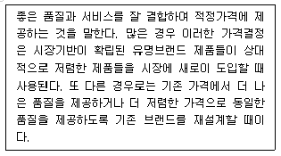
- 원가기반 가격결정(cost-based pricing)
- 고객가치기반 가격결정(customer value-based pricing)
- 우수가치 상응 가격결정(good-value pricing)
- 부가가치 가격결정(value-added pricing)
- 경쟁우위 기반 가격결정 (competitive advantage-based pricing)
(정답률: 24%)
4과목: 유통정보
71. 의사결정(Decision Making)의 오류에 대한 설명으로 가장 옳은 것은?
- 과거 정보보다 최근에 주어진 정보에 더 큰 비중을 두는 경우로, 경영자는 과거로부터 축적되어온 정보보다 최근의 정보에 현혹되는 오류를 범할 수도 있는 것을 ‘과소평가 오류’라 한다.
- 경영자는 선택된 대안을 실행하면서 ‘무언가 잘못되어 가고 있다’라는 느낌을 받을 수가 있다. 잘못된 대안을 선택하고 실행을 되돌리지 못하는 경우를 ‘정당화 추구 오류’라 한다.
- 경영자의 지나친 낙관주의, 자신과 기업 역량에 대한 과도한 자신감, 새로운 정보를 받아들이지 않으려는 강한 보수성 등 복합적인 요인에 의해 발생하는 것을 ‘동일시 오류’라 한다.
- 경영자는 단기적으로 손해가 발생하더라도 장기적인 이익이 되는 방향으로 의사결정을 선택해야만 정당하다는 오류를‘언어나 문맥의 표현 차이 오류’라 한다.
- 경영자가 성공은 자신의 탓으로, 실패는 외부적인 환경 요인으로 돌리는 경우를 ‘선택적 지각 오류’라 한다.
(정답률: 27%)
72. 유통정보시스템 구축을 위한 데이터 관리에 대한 설명으로 가장 잘못된 것은?
- DB는 데이터 관리의 중복을 최소화하고, 데이터 무결성 및 접근 권한 등 보안성을 고려함으로써 많은 사용자가 동시에 접근하더라도 데이터의 안전성과 신뢰성이 보장되도록 설계되어야 한다.
- 유통정보시스템은 기업의 유통활동을 지원하기 위한 업무기능을 전자적으로 구현하고 이와 관련된 데이터를 통합적으로 저장.관리할 수 있도록 지원하는 시스템이다.
- 유통정보시스템의 데이터베이스는 유통업무와 관련된 여러 응용시스템들이 데이터를 공유할 수 있도록 최소한의 중복으로 통합하여 컴퓨터에 저장한 운영 데이터의 집합이다.
- 기업의 유통업무 활동지원과 관련된 원자재, 부자재, 공급자, 조달가격 등을 내부데이터로, 고객불 만처리대장, 고객성향, 고객서비스기록 등을 외부데이터로 대별하여 볼 수 있다.
- 외부 데이터베이스에는 협력업체, 경영정보, 서비스 제공정보, 연구결과, 시장분석, 소비자분석, 정치.경제환경 분석, 사회문화 정보 등이 있다.
(정답률: 36%)
73. U-Commerce의 기반기술인 유비쿼터스 컴퓨팅은 컴퓨터의 내재성과 이동성을 강화함으로써 구현할 수 있다. 이러한 유비쿼터스 컴퓨팅을 가능하게 하는 핵심기술이 아닌 것은?
- 센서
- 분산화
- 커뮤니케이션 기능
- 인터페이스
- 보안
(정답률: 21%)
74. 지식근로자가 기업에서 활동할 때 가장 지양해야 할 자세에 해당되는 것은?
- 개인이 창출한 지식이 조직의 지식으로 승화될 수 있도록 해야 한다.
- 자신의 업무를 확대하고 새로운 업무에 도전한다.
- 세부적인 업무에 치중하는 것보다는 더 넓은 시각을 갖고 근본 목적을 달성할 수 있어야 한다.
- 프로세스 위주의 사고방식을 가져야 한다.
- 모든 관련 정보를 취득하여 표면상의 문제점을 위주로 해결하여야 한다.
(정답률: 48%)
75. 국내의 유통, 물류, 서적 등에서 적용되는 바코드(Bar Code)에 대한 일반적인 설명으로 가장 옳지 않은 것은? (문제 오류로 실제 시험에서는 3, 4번이 정답처리 되었습니다. 여기서는 3번을 누르면 정답 처리 됩니다.)
- 최대규격은 표준규격의 200%까지, 최소치에서의 세로 길이는 1.8cm까지 사용하도록 권장된다.
- 최소치는 표준규격의 80%를 기준으로 하지만, 경우에 따라 그 이하로의 규격도 가능하나 계산대(POS)에서 판독 불가능한 경우를 대비해야 한다.
- GS1-14의 체계로서 물류식별코드 1자리, 국별식별 코드 3자리, 제조업체코드 6자리, 상품품목코드 3자리, 체크디지트 1자리 등으로 구성된다.
- ISBN 부여대상 자료를 보면 고교교과서, 수험서, 문학도서, 카세트에 녹음된 도서, 선전용 팸플릿 등 다양하다.
- QR code는 일본에서 개발되었으며, Data Matrix code는 미국에서 개발된 흑백 격자무늬 패턴으로 정보를 나타내는 매트릭스 형식의 이차원 바코드이다.
(정답률: 50%)
76. QR시스템과 관련된 설명 중 가장 옳지 않은 것은?
- 유통업자와 제조업자간의 정보네트워크를 축으로 하기 때문에 납기를 단축할 수 있다.
- 물류비를 줄일 수 있는 잠재력을 가지고 있다고 볼 수 있다.
- EDI를 통해 문서거래의 필요성이 줄어들고 정확성이 늘어난다.
- 공급업자의 빈번한 배송으로 상품이 보충되어 물류센터가 재고품을 더 많이 보유하게 된다.
- 유행의 속성을 지닌 패션상품에 적합하다.
(정답률: 60%)
77. CRM에서 Front-end Applications, Back-end Applications 그리고 Database 구축 등에 대한 설명으로 가장 적합하지 않은 것은?
- Front-end Applications은 고객접점에서 이루어지는 다양한 서비스 활동부분을 지원한다.
- Front-end Applications은 E-mail, 채팅, 팩스, 영업사원의 접촉, A/S방문, 고객전화 등으로 고객과 접촉하는 채널을 지원하는 애플리케이션이다.
- Back-end Applications은 고객을 정의하고 관리기준을 설정함으로써 데이터마이닝을 통해 고객에게 제공하는 제품과 서비스의 품질향상을 지원한다.
- Back-end Applications은 개인별로 차별화된 일대일 마케팅을 통해 충성고객을 확보한다.
- 고객생애가치를 증대시키기 위해 기업활동에서 얻은 데이터를 고객별로 저장.분석.관리하여 원활한 기업활동을 지원한다.
(정답률: 40%)
78. e-비즈니스와 관련된 내용으로 가장 옳지 않은 것은?
- e-Procurement : 인터넷을 활용한 단일 통합채널을 통해 고객과 접촉하며, 지역적.시간적 한계를 극복 할 수 있는 고객 관리방법으로서 음성, 동영상, FAQ 등 다양한 기술로 고객응대를 할 수 있다.
- e-SCM : e-Business 환경에서의 디지털 기술을 활용하여 공급자, 제조업자, 유통업자, 고객 등과 관련된 물자, 정보, 자금 등의 흐름을 신속하고 효율적으로 관리한다.
- e-Logistics : 정보통신기술을 기반으로 물류서비스 제공업체가 다양한 부가가치 물류서비스를 온라인상에서 구현하여 화주기업의 물류 프로세스를 효율적으로 지원하는 활동이다.
- e-Auction : 구매의 편리성, 접근성, 가격 결정에 고객참여가 가능한 능동성, 시∙공간의 비제약성, 소액∙저가 상품에 대한 경매 등으로 인해 고객들 의 관심을 끌어 모으는 계기가 된다.
- e-CRM : 인터넷을 통해 획득한 고객에 대한 정보와 지식을 기반으로, 고객개인이 필요로 하는 맞 춤서비스를 제공할 수 있기 때문에 고객만족도 향상을 기대할 수 있다.
(정답률: 43%)
79. 의사결정지원시스템(DSS)의 일반적 특성에 대한 설명으로 가장 옳지 않은 것은?
- 경영계층에 속하는 의사결정자를 지원하는 시스템으로 주로 구조적, 반구조적 상황에서 인간의 판단과 객관적인 정보를 통합하여 이루어진다.
- 다수의 상호의존적인 의사결정 또는 순차적인 의사결정을 지원한다.
- 다양한 의사결정 과정의 스타일뿐만 아니라 탐색, 설계, 선택, 구현 등의 단계를 지원한다.
- 복잡한 문제에 관한 효율적/효과적 해결안을 제공하는 지식관리 구성요소를 갖추고 있다.
- 학습을 촉진함으로써 응용에 대한 신규 수요를 창출하고 정교화를 도출한다.
(정답률: 14%)
80. 골드렛(E. Goldratt) 박사가 개발한 사고 프로세스(thinking process)의 5가지 도구에 대한 설명으로 가장 옳은 것을 고르시오.
- CRT(current reality tree) : 획기적인 아이디어 (주입)로부터 인과관계를 통해 바람직한 결과를 도출한다.
- EC(evaporating cloud) : 드러난 문제증상들로부터 인과관계를 통해 원인이 되는 핵심딜레마를 찾아내고 이로부터 유발되는 문제들을 확인한다.
- FRT(future reality tree) : 공동의 목적을 추구하는 쌍방 간의 갈등, 상충, 대립 등의 상황을 묘사하며, 이런 상황을 해소하는 획기적인 아이디어인 주입을 찾아낸다.
- PRT(prerequisite tree) : 주입의 실행을 통해 목적 달성을 방해하는 장애들을 찾아내고 그 장애들을 극복하는 최종목표들을 도출한다.
- TrT(transition tree) : 중간목표를 달성하는데 필요한 행동을 도출해 실행계획을 수립한다.
(정답률: 17%)
81. RFID/USN 시스템에 대한 보안 취약점과 보안 요구사항에 대한 보완책으로 적절하지 않는 것은?
- 킬 태그(Kill tag) - MIT의 AutoID 센터에서 제안한 방법으로 태그의 설계시 8비트의 비밀번호를 포함하고, 태그가 비밀번호와 ‘Kill’ 명령을 받을 경우 태그가 비활성화되는 방식
- 페러데이 우리(Faraday Cage) - 무선 주파수가 침투하지 못하도록 하는 방법으로 금속성의 그물이나 박막을 입히는 방법. 실제로 RSA 연구소는 20⑤년 유로화 RFID 시스템 도입에 대비하여 돈 봉투에 그물을 입힌 상품을 제시
- 칩 추가(System on chip) - 태그 내에 칩을 추가하여 하드웨어적으로 보호하는 방식
- 방해 전파(Active Jamming) - 리더기가 제품을 읽지 못하도록 방해신호를 보내는 물건을 소비자가 들고 다니는 방식
- 차단자 태그(Blocker tag) - 모든 질문 메시지에 대해 ‘그렇다’라고 대답하는 태그로서, 이 태그를 차단자 태그가 만드는 비밀 구역 안에서 안전하게 보호하는 방식
(정답률: 9%)
82. 최초 배송인과 최종 수령인 사이에 거래되는 물류단위 중에서 주로 컨테이너 같은 대형 물류단위를 식별하기 위해 개발한 18자리 식별코드는?
- SSCC
- GTIN
- GDSN
- UPC
- EPC
(정답률: 47%)
83. 신 물류정보시스템(New logistics information system)에 대한 설명으로 가장 옳지 않은 것은?
- CRP는 유통업체 입장에서 소비자의 수요에 따라 결품이 발생하기 전에 자동적으로 상품을 공급받는 풀(pull) 방식의 상품보충 프로그램이다.
- CAO는 POS를 통해 얻은 상품흐름 정보와 계절적인 요인에 의해 소비자 수요에 영향을 미치는 외부정보를 컴퓨터로 통합.분석하여 주문서를 작성하는 시스템이다.
- CPFR에서 계획을 수립하기 위해서는 공급사슬상의 파트너들이 주문정보에 대한 실시간 접근이 가능 해야 한다.
- ECR은 공급자인 제조업자나 도매업자가 소매업자를 대신해서 소매재고를 관리하는 것이며, 소매업체는 유통업체나 제조업체에 판매 및 재고정보를 제공하고 치밀한 자동보충발주를 해야만 한다.
- APS(Advanced Planning System)는 생산, 마케팅, 구매 부서간의 전자적 정보교환으로 수요 및 공급의 변화에 대한 대응과 생산계획 및 재고를 체계적으로 관리할 수 있다.
(정답률: 34%)
84. 기업이 지식경영시스템을 도입함으로써 얻을 수 있는 효과와 가장 관련이 먼 것을 고르시오.
- 기업의 경쟁력 강화
- 기업 운영의 효율성 향상
- 시스템 관리비용의 절감
- 지식자원의 자산화
- 새로운 지식의 창조능력 증대
(정답률: 41%)
85. 균형성과표(BSC: Balanced Score Card)에 대한 설명으로 옳은 것은?
- 비즈니스 프로세스의 관점에서 해당 기업의 공급 업체로부터 고객에 이르기까지 계획, 공급, 생산, 인도, 회수가 이루어지는 공급망을 통합적으로 분석한다는 데 그 기초를 두고 있다.
- 재무성과 중심 측정도구의 한계를 극복하기 위해 개발되었으며, 주요 성과지표로는 재무, 고객, 내부프로세스, 성장과 학습 등이 있는데, 이들 분야에 대해 측정 지표를 선정해 평가한 뒤 각 지표별로 가중치를 적용해 산출한다.
- 전체적인 공급망 성과측정을 위해 공급망의 신뢰성, 유연성, 대응성, 비용, 자산 등의 성과측정분야를 제시하고 있다.
- 조직 내외부의 관점에서 성과를 측정할 수 있으며, 공습사슬관리의 성과측정을 위해 개발된 모형으로 계획, 조달, 제조, 인도, 반환 등의 기본 프로세스를 가지고 있다.
- 공급망의 통합적 분석을 통해 공급망 상의 상품, 서비스, 정보 등의 흐름을 개선하며 망 내의 연결부분에서 발생하는 과잉재고와 낭비의 방지방법을 도출할 수 있게 한다.
(정답률: 37%)
86. 유통정보시스템 구축을 위한 설계과정의 첫 번째 단계에 서 가장 고려해야할 사항을 고르시오.
- 각각의 의사결정을 수행할 각 수준의 담당자 결정
- 의사결정에 필요한 정보 파악
- 유통시스템의 주요 의사결정에 대한 영역 확인
- 누가 누구에게 어떤 방식으로 정보를 제공할 지를 결정
- 불확실성을 제거할 수 있는 방안과 현재의 정보를 보완할 수 있는 방안 마련
(정답률: 15%)
87. 유통정보시스템에 대한 내용 중 가장 옳지 않은 것은?
- 정형성과 개방성을 가지고 적절한 정보와 조직적인 흐름을 통해 의사결정을 지원해야 한다.
- 다점포 영업을 지향하는 유통경영의 형태에 비추어 정보에 대한 접근의 용이성과 보안성 등을 이유로 독립적인 데이터관리 형태를 권장한다.
- 전사적 협력을 기반으로 유통산업의 업무특성을 고려하여 개방적 시스템의 구축이 필요하다.
- 단기적이고 즉흥적인 문제해결을 위한 시스템이 아니라 상시적이면서 급변하는 환경에 신속히 대응해야 한다.
- 유통정보시스템의 구축은 일반적으로 기획과 기술적 구현 그리고 실무도입의 과정을 거친다.
(정답률: 52%)
88. 다음 중 EPC(Electronic Product Code)의 구성요소로 가장 관계가 없는 것을 고르시오.
- 헤더
- 업체코드
- 확장자
- 상품코드
- 일련번호
(정답률: 50%)
89. 다음에서 설명하는 내용은?
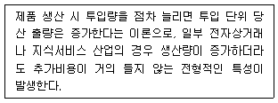
- 수확체증의 법칙
- 임계치 게임의 법칙
- 규모의 경제
- 범위의 경제
- 캐즘이론
(정답률: 34%)
90. 다음 중 전자상거래 조직이 아닌 것을 고르시오.
- Brick-and-Mortar Organizations
- Virtual Organizations
- Pure-Play Organizations
- Click-and-Mortar Organizations
- Click-and-Brick Organizations
(정답률: 21%)